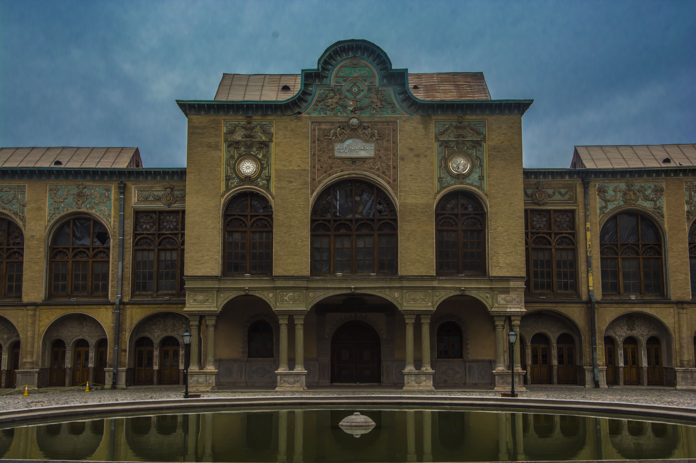

حافظه تاریخی تهران
تاریخ مسعودیه فقط تاریخ یک خانه اعیانی نیست. این مجموعه از اقامتگاه شاهزادهای قاجاری به پایگاه مشروطهخواهان، سپس به نخستین تجربههای موزه و کتابخانه رسمی، دانشکده افسری و وزارت معارف بدل شد.
در سال ۱۲۸۴ خورشیدی عمارت به همدمالسلطنه فروخته شد. رضاشاه در ۱۲۹۹ آن را خرید و یک سال بعد به وزارت فرهنگ، اوقاف و صنایع مستظرفه هدیه کرد. از ۱۳۰۴ تا ۱۳۱۸ بخشی از نخستین کتابخانه رسمی و در عمل نخستین موزه کشور نیز در همین فضا شکل گرفت.
در جریان جنبش مشروطه، مسعودیه در کنار خانه ظهیرالدوله هدف حمله قرار گرفت. انفجار بمب در مسیر کالسکه محمدعلیشاه در نزدیکی این عمارت، یکی از گرههای روایی تاریخ سیاسی تهران است.

مسعود میرزا ظلالسلطان دستور ساخت مجموعه را در باغ نظامیه صادر میکند.
عمارت در شبکه خانههای اثرگذار بهارستان قرار میگیرد و شاهد درگیریهای خیابانی میشود.
مالکیت از حوزه خصوصی به نهاد فرهنگ و آموزش عمومی منتقل میشود.
اشیای قدیمی برای نمایش گرد میآیند و مسعودیه نقش نهاد فرهنگی ملی پیدا میکند.
با تفکیک فرهنگ و هنر از آموزش، عمارت محل استقرار نخستین وزارتخانه آموزش و پرورش میشود.
مسعودیه رسماً بهعنوان میراث ملی ایران به ثبت میرسد.


بازدیدکننده امروز در حیاط مشیری یا کنار حوض، همان پرسشی را پیش رو دارد که تاریخپژوهان داشتهاند: چگونه یک خانه شاهزاده به نهاد فرهنگ عمومی تبدیل شد؟ دانشنامه و تورهای روایی مجموعه میکوشند این پرسش را با سند، عکس و معماری پاسخ دهند.